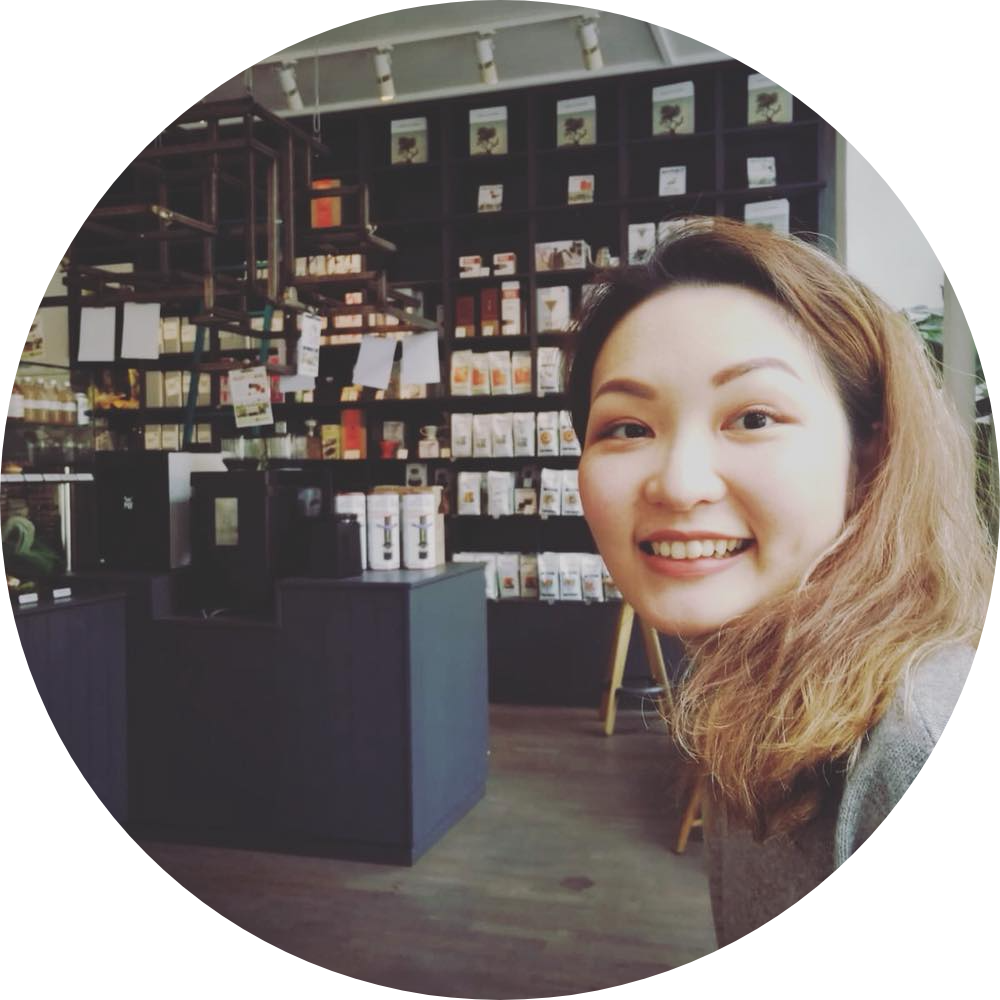

Wenlin Ko
Digital Campaign Executive
Experienced in media planning and paid media in the digital marketing industry.
Skilled in budgeting, project management and communicating internally and externally.
Currently learning Python, HTML and css.
Experience
| Digital Campaign Executive |
- ByInspired |
| Shanghai, China |
| Nov 2017 - Dec 2019 |
- Digital campaign planning and execution. Identified the campaign
strategy and target to achieve KPI.
- Verified details of digital assets, display and interaction on different devices.
- Operated in-house platform for ad tag, tracker and report
- Negotiate commercial
- Select suppliers and review contracts with defined strategies and agreements.
- Explored and maintained the partnership with stakeholders, expanded from 0 to 50 titles including fashion, finance, business and news media.
- Communicated with clients and recommended media solutions including display ads and paid social.
- Communicated with the development team and provided technical support to publishers to adapt JavaScript/H5 in different CMS system.
- Organized the schedule for CEO visits to Shanghai and Beijing.
| Sales Associate |
- Coach |
| Oxfordshire, United Kingdom |
| Feb 2016 - Sep 2017 |
- Achieved the highest sales in Europe, made over 1 million pounds during the time with the company.
- Averaged above 95% in modern luxury hosting ceremony service checks.
- Provided outstanding customer service to a range of nationalities.
Skills
| Python |
⭐⭐⭐ |
| HTML |
⭐⭐⭐ |
| css |
⭐⭐ |
LinkedIn
My hobbies
Contact Me